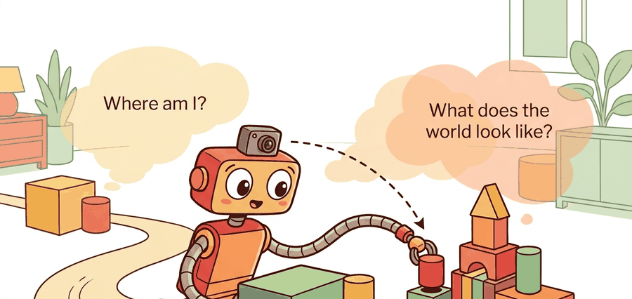

"A pose estimate is a contract between memory, sensors, and the next motion command."
A Loop Closure That Came Back With Receipts

This section assumes familiarity with coordinate frames from section 4.5 and with the Kalman filter and factor-graph mechanics introduced in section 8.6. The pose-belief interface defined here is extended through odometry in section 29.2, scan matching in section 29.3, and loop closure in section 29.5. The map and covariance outputs feed directly into the path-planning stack described in section 30.1.
A delivery robot rounds a corner in an underground parking garage, GPS gone, wheels slipping on polished concrete. Its only ground truth is a spinning lidar and whatever it remembers from a minute ago. Every autonomous system that operates beyond a motion-capture lab faces exactly this moment: sensors drift, maps are never pre-loaded, and the environment changes while the robot moves through it. SLAM (Simultaneous Localization and Mapping) is what makes that moment survivable. It matters right now because modern robots are leaving controlled testbeds for hospitals, warehouses, and city streets, where self-consistency between pose and map is the difference between a useful action and a catastrophic one. By the end of this section you will formalize the joint posterior over trajectory and map, trace every measurement to its uncertainty, and build the belief interface that the rest of the navigation stack depends on.
Problem First
A robot cannot make a reliable plan if pose and map are treated as separate chores. The map is built from poses, while pose estimates depend on the map. This is the pose-map chicken-and-egg, and it is why SLAM is an estimation problem rather than a drawing problem.
The state usually contains a trajectory $x_{0:T}$ and map variables $m$. Controls $u_{1:T}$ predict motion, while observations $z_{1:T}$ correct that prediction. A localization-only system estimates $x_t$ against a known map; a mapping-only system assumes poses are good enough; SLAM estimates both and exposes the remaining uncertainty.
A localization claim in this section is incomplete without frame, timestamp, pose covariance, map version, and the planner or controller that consumed it. Otherwise the result is a drawing rather than an interface.
Formal Model
The estimator in this opening section is a belief interface: pose, map, timestamp, covariance, and downstream consumer must be carried together. The posterior is useful only if the planner can ask which part of the world model is fresh enough to act on.
$$ p(x_{0:T},m\mid z_{1:T},u_{1:T}) \propto p(x_0)\prod_t p(x_t\mid x_{t-1},u_t)\prod_t p(z_t\mid x_t,m) $$
The notation matters because it names evidence sources: odometry, inertial cues, scans, visual landmarks, and loop closures. The engineering move is to keep a residual and uncertainty for each source so a bad route can be traced to the measurement that moved the belief.
Consider a specific case: Google's Cartographer system, deployed on the Backpack platform and on Boston Dynamics Spot, maintains a 2-D or 3-D submap grid that is continuously inserted with new lidar scans. A pose graph node is created every few centimeters of travel; when a loop closure is detected (a scan matches a previous submap within a configurable score threshold), a constraint is added and the entire graph is re-optimized using Ceres Solver. On a typical indoor corridor scan, Cartographer reports a loop-closure translation error under 5 cm after 100 m of travel. This concrete pipeline, sensor to submap to constraint to optimizer, is what the posterior $p(x_{0:T},m\mid z_{1:T},u_{1:T})$ looks like in practice.
In Cartographer, the parameter min_score inside constraints_builder (default 0.55) controls which scan-to-submap matches become loop-closure constraints. Raising it to 0.65 on featureless warehouse floors or long corridors dramatically reduces false closures that silently warp the map. If the optimized trajectory suddenly jumps after a loop closure, check this threshold before suspecting the solver: most "Ceres diverged" reports in practice trace back to a spurious low-score constraint rather than a solver bug.
- Define the state variables: pose, velocity if needed, landmarks or grid cells, and map frame.
- Attach every measurement to a frame, timestamp, residual, and covariance.
- Update the belief, then publish only the estimate fields the planner is allowed to consume.
- Replay the same evidence after perturbing one sensor or transform assumption.
Worked Diagnostic
Code Fragment 1 should be read as a pose-belief smoke test. Before ROS nodes and graph optimizers enter the picture, the reader should see how one observation changes an estimate and whether the uncertainty moves in the expected direction.
# Compare a pose prior with one landmark observation.
# The innovation shows whether the new range evidence agrees with the map.
import numpy as np
prior_xy = np.array([2.0, 1.0])
landmark_xy = np.array([5.0, 1.0])
measured_range_m = 2.7
predicted_range_m = np.linalg.norm(landmark_xy - prior_xy)
innovation_m = measured_range_m - predicted_range_m
print(f"predicted={predicted_range_m:.2f} m")
print(f"innovation={innovation_m:.2f} m")Expected output interpretation. The printed residual shows a 30 cm disagreement in the corrective direction: the sensor says the landmark is nearer than the prior predicts. In a filter or factor graph, this measurement would contribute a correction term that pulls the pose estimate, the landmark estimate, or both toward a shorter range.
Tool Workflow
In production, ROS 2 tf2 handles frame transforms, Nav2 consumes map and localization topics, and GTSAM or Ceres solves larger nonlinear least-squares problems. That is the reduction from hand-checking residuals to configuring maintained graph and middleware components.
Use the hand calculation to expose the belief update, then let ROS 2, GTSAM, Cartographer, or Nav2 handle large logs and maps. The hand check remains the regression test for units, frames, and uncertainty.
Replay one short route with delayed transforms, missing scan packets, and a wrong initial pose as separate perturbations. The point is to learn whether failure begins as sensing ambiguity, association error, optimization drift, or planner misuse of a stale map.
The most common silent failure is covariance collapse: the filter becomes overconfident because process noise was tuned too low or loop closures are accepted without a consistency check. The robot reports a tight pose uncertainty while the true error grows, so the planner commits to a path it cannot safely execute. The symptom is a robot that navigates confidently into obstacles or drifts off a corridor centerline without triggering any localization alert. Detecting this requires comparing the filter's self-reported covariance against an independent ground-truth reference (a fiducial, a known docking station, or a separate odometry source) at regular intervals.
For a warehouse robot, the minimum replay bundle is odometry, IMU, scan stream, pose estimate, covariance, active map layer, local costmap, and recovery action. That bundle separates being lost from being correctly localized in a changed aisle.
Three concrete directions are colliding in current SLAM work. First, 3D Gaussian Splatting SLAM systems such as SplaTAM (Keetha et al., 2024) build photorealistic submaps at 100+ fps on an RTX 3090, but their per-Gaussian memory footprint scales poorly beyond room-sized scenes; a Boston Dynamics Spot carrying a single depth camera saturates 12 GB VRAM after roughly 200 m of corridor travel, forcing submap culling strategies that reintroduce drift. Second, open-vocabulary segmentation models such as CLIP-Fields allow a warehouse robot to query the map by object name ("find the charging dock") without pre-labeling, but the CLIP backbone adds 80 ms per query on an NVIDIA Jetson Orin, which is long enough to stall a 10 Hz planning loop. Third, foundation-model localization (e.g., AnyLoc, 2024) achieves place recognition across seasons and lighting changes that break conventional descriptor matching, yet its retrieval latency of 150-300 ms per query is incompatible with reactive collision avoidance that requires a fresh pose at 50 Hz. The unresolved engineering gap is not whether these representations work in isolation; it is whether their compute and latency budgets can coexist on the constrained onboard hardware that a mobile manipulator actually carries.
A pose estimate is a contract between memory, sensors, and the next motion command.
Can you state the state variables, observation residual, uncertainty representation, replay artifact, and most likely field failure for where am i and what does the world look like? If one field is vague, the estimator is not ready for embodied use.
Where am I and what does the world look like is production-ready only when geometry, uncertainty, timing, and action consequences are tested together.
Design the two-run test around global localization: run once with a correct prior and once with an intentionally ambiguous starting pose. Report convergence time, covariance collapse, wrong-mode persistence, and the planner action blocked until localization is credible.
What's Next?
Continue to Section 29.2: Odometry and dead reckoning, where this state-estimation contract becomes the input to the next embodied capability.
Section References
Durrant-Whyte, H. and Bailey, T. "Simultaneous Localization and Mapping." IEEE Robotics and Automation Magazine, 2006. https://ieeexplore.ieee.org/document/1638022
Classic SLAM tutorial that frames the estimation problem and the role of uncertainty.
GTSAM Project. "Factor Graphs and GTSAM." Official documentation. https://gtsam.org/
Primary tool reference for factor graphs, smoothing, pose graphs, and robotics estimation examples.
ROS 2 Navigation Project. "Nav2 documentation." Official documentation. https://navigation.ros.org/
Primary documentation for integrating localization, maps, planners, controllers, behavior trees, and recoveries.